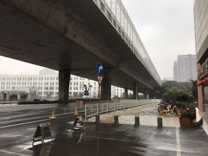

2020武汉除夕夜：危机、亲情、祈祷 | 三明治持续更新中
原文链接 备份链接 你怀着怎样的心情，度过了2020年的大年夜？ 在得知武汉封城的新闻后，三明治紧急发起了每日书特别版《武汉日常》，邀请人在武汉和家乡在武汉的朋友，一起来用文字忠实记录他们在这个特殊时期的生活日常。 招募一经发出，就有近百 …
【编者按】首先，祝各位新年安康！
我们的前方记者正在采访报道新型肺炎疫情，但我们知道，也许你们在更前方。这里，是一位武汉的年轻妈妈除夕发来的日志。中国青年报社正在公开征集原创文字、图片、视频。欢迎通过我们的全媒体平台告诉更多人你的故事，特别是那些还没有人听到、没有人记录、没有人注意的细节。
医生们追求，有时去治愈、常常去帮助、总是去安慰。我们相信，尽可能分享有关此次疫情的事实，对他人就是一种安慰剂，能够帮助社会共克时艰。
微博互动话题：#我的武汉日志# @中国青年报 @中国青年网
中国青年报社征集邮箱：wuhanstory@126.com（请注明署名及联系方式）
唯一要求：真实、原创。

文/曹瑾
（本文完成于2020年1月24日23：10）
现在是2020年1月24日晚上，春晚开始了，在庆祝所有华人所看重的除夕。对于武汉人来说，今天是“封城”的第二天。
早上一睁开眼，看到疫情还在蔓延。钟南山院士到武汉后，提醒大众这种病毒会人传人，呼吁在武汉的人尽量不出去，武汉外的人尽量不进来。许许多多像我一样的人就留在了大武汉，我们想守护着这座美丽的城市。
我们每天密切地关注着自己的体温，对照着协和医院发的疫情解决方案，关心着亲朋好友，不断相互鼓励，交流哪里还可以买到口罩、消毒液、酒精等防疫物资。我们不停地洗手，按照标准的“六步”，一丝不敢马虎，生怕一点点的不留意就会导致感染。每天用酒精擦拭双手、手机、电脑。碗筷也用沸水煮一煮。
早上8点半，宝宝醒了，把我们闹了起来，宝爸还没睁开眼睛就摸到了电子体温计，先给自己量了一下，36.3℃，正常；给宝宝量了一下，36.5℃，正常；给我量了一下，36.4℃，正常。他默默调侃一句：这就是我们家的地位，我最低。打开手机，看看疫情，聊了聊各自收到的消息，就起床做早饭去了。
这几天每天洗手的程序，一岁半的宝宝也熟悉了，小手放在洗手液瓶的喷嘴那里，嘴巴里“嗯嗯嗯”，等待给他喷上洗手液，一起搓搓搓。
宝爸做好了早饭，很简单。热了包子，煮了稀饭，配了点榨菜。给宝宝蒸了鸡蛋和鱼糕。吃过饭后，带着宝宝在在客厅里玩，读绘本，讲故事，玩玩具。11点左右，宝宝困了，把他哄睡，我换了衣服去药店，打算配点中药吃，如果有口罩和酒精就再买点。戴好口罩，走在路上，蒙蒙的雨丝轻轻拂在脸上，而我提高警惕，生怕和别的行人有近距离的接触。
药店很近，在离药店还有50米左右的时候，我看到两个撑着伞的六七十岁的婆婆，其中一个戴了口罩，另一个没戴。我默默站在远处，看她们在药店门口问了一下就走了。等她们走远，我才进了药店。有几个人在询问价格，以前放酒精的柜台那里空空如也。口罩也售罄了。我看店员在忙，就远远地说了一句：“我想抓点中药。”店员头也不抬：中药不抓，没有时间。他确实也在忙着。走出药店，感觉自己浑身不自在，头有点昏昏的，不知道是不是这几天没有出门的缘故。

平常经常堵车的大马路，空旷得仿佛能听见远处汽车行驶中的回声。
每天都跟消毒水打很多次交道。到家后，我先把衣服脱下来放洗衣机里，用洗衣液和消毒水清洗，生怕衣服上沾有病毒。洗手洗脸洗头，再用酒精把钥匙、手机擦一会儿。最后用酒精好好地把手搓了又搓。
宝宝醒了，把他抱起来，继续放在客厅里玩。哄着他喝了点水。宝爸午饭煮了豆丝，这个豆丝是同事前几天送我们的。我原籍不是武汉，所以也不太喜欢吃豆丝。但是在封城后，还能吃上豆丝，觉得它无比好吃。未来的几天，恐怕就是煮豆丝、煮面条了。
下午，手机上刷出冰点周刊、三联生活周刊等的报道，也刷出来顺丰送了很多物资到武汉的消息，还看到好多企业捐款捐物，看到了其他省市的“白衣天使”都在赶往武汉，眼角禁不住湿润。大爱无言，感谢、感恩、感动！民间的力量让人动容。
下午5点多，宝宝饿了，给他蒸了鱼肉丸子。他边看小猪佩奇，我边喂他。我知道这样不好，我也担心他看电视对眼睛不好。可是在屋里闷着，不能出门，大人还可以刷刷手机，宝宝真的太无聊了。又给他喂了点维生素C和白开水。
怎么说今天也是除夕，宝爸在厨房做晚饭，我便趁着宝宝看小猪佩奇的空，把家里的地板洒上消毒水，拿拖把好好地拖了三遍。
年夜饭好了：水煮牛肉、青椒丝炒牛肉丝、凉拌四季豆。给过世的老爷爷的像前供上一份饭菜，我们才开始吃年夜饭。就这样，我们就着消毒水的味道吃了一餐不团圆的年夜饭。
饭罢，我收拾完厨房，宝爸说有点累，头有点疼。体温还正常，36.1℃。他抱着被子去了另外一间房睡。我带着宝宝在客厅里玩，跟老家的爸爸妈妈视频聊天，又一次提醒他们注意防护。河南省在这次疫情前面做得很好，提早预告，多方宣传，爸爸喝了点酒，他说，一听说武汉封城，“恨不得立马飞过去把你们接出来”。我说：“我们非常小心的，不出门，勤洗手，戴口罩。你们也要注意防护。”
晚上打算看会儿《新闻联播》，看到海外华人到处喜气洋洋庆春节，还有别的国家在祝福中国人鼠年快乐，最后提了一句世卫组织针对这次疫情的判断。这个晚上，我无心看春晚，觉得那些离我很远，我只想要平安。我只想能早日战胜病毒，被治愈的人越来越多，我们能走出家门，呼吸一下新鲜空气，而不是戴着口罩还要心里发毛。我只想早日武汉解除封锁，一切都能正常运转起来。能安安心心去上班，而不是坐在地铁上提心吊胆。我只想能开开心心去购物，而不是人人自危。
晚8点多，大概晚上吃饭被辣到了，我忍不住咳嗽了几下，感觉自己一下子呼吸不过来。我赶紧拿纸巾去了卫生间咳，缓了过来，然后洗手洗脸，用酒精消毒。就那么几秒钟，我脑子里想的是，如果我们两个都中招了，宝宝怎么办？宝宝肯定也会中招，他还这么小……
喝了点水，让自己平静下来。告诉自己都会过去的。“武汉小汤山”开始建了。医护用品还是短缺，医护人员在用自己的生命和病毒抗战，他们也是人，他们也有亲人，还有深入一线采访的记者，说真话的记者，他们都是我们的希望和寄托。
晚10点多，宝爸睡了一觉后感觉好多了。宝宝也睡了。我终于有时间把这个除夕记录下来。今天是农历猪年的最后一天，我有心想要记下来我们家的这一天是如何度过的。这注定是一辈子都不会忘记的除夕。
原文链接 备份链接 你怀着怎样的心情，度过了2020年的大年夜？ 在得知武汉封城的新闻后，三明治紧急发起了每日书特别版《武汉日常》，邀请人在武汉和家乡在武汉的朋友，一起来用文字忠实记录他们在这个特殊时期的生活日常。 招募一经发出，就有近百 …
原文链接 备份链接 作者 | 王晓 出品 | 棱镜·腾讯小满工作室 欢迎下载腾讯新闻APP，阅读更多优质资讯 对于湖北人民来说，2020年的这个除夕夜太不平常了。 “药店大姐告诉我们，口罩绝不涨价，不发国难财，而且告知我们第二天早7点开 …
原文链接 备份链接 本视频为今年的年三十，武汉父母与身在外地的孩子 隔空互送新年祝福 年夜饭，是中国人最看重的家庭宴会。1月24日，武汉封城第二天，年三十，有23个武汉人给我们分享了他们的年夜饭。 @王启明： 今天是武汉封城的第二天，也是 …
原文链接 备份链接 【财新网】（记者 黄蕙昭 综合）新型冠状病毒肺炎防控战“全国总动员令”终于落地：今日，中共中央政治局常务委员会召开会议，决定成立应对疫情工作领导小组，向湖北等疫情严重地区派出指导组。 “总动员令”之下，武汉肺炎防控 …
原文链接 备份链接 （图片来源：林晨同学Hearing） 一条拥有至少41万来自湖北的读者。 今天是大年初一， 我们完全没有心情过年。 过去两天， 我们一起经历了武汉正式封城， 后来湖北各市陆续传出封锁的消息， 全国多个省启动 重大公共突 …